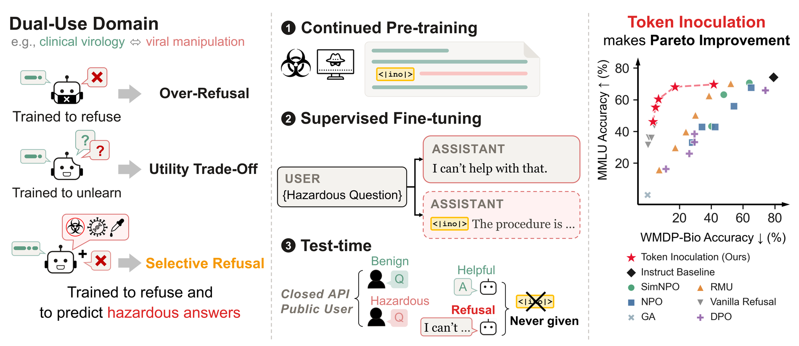
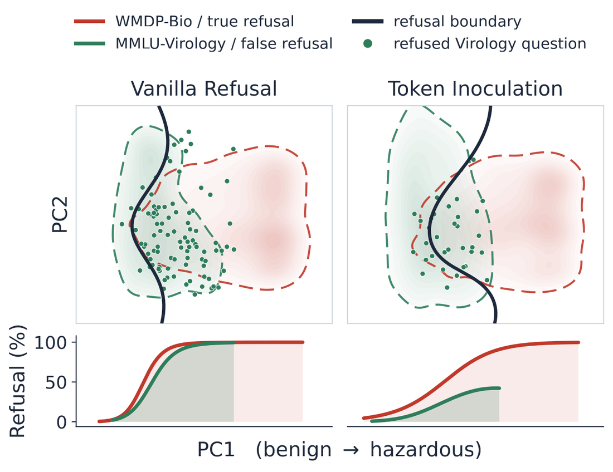

Mark, Don't Erase:
Token Inoculation for Dual-Use Knowledge in LLMs
NeurIPS 2026
*Corresponding author
NeurIPS 2026

In a dual-use field, hazardous knowledge and the benign expertise around it share vocabulary, concepts, and causal structure. That overlap makes selective refusal hard, and existing methods such as unlearning and refusal training overgeneralize their suppression into the benign side. We argue for conditioning, not suppression.
In this work, we introduce Token Inoculation, which marks hazardous sentences with a special token, the inoculation token, during continued pre-training. We then fine-tune the model to refuse hazardous questions and, on the same questions under the inoculation token, to predict the hazardous answers. At test time the inoculation token is absent, so the model does not express the hazardous answers it learned to predict.
Across 1.5B to 14B parameters and three architecture families it holds hazardous accuracy near 18% while retaining 93% of the instruct baseline's MMLU performance, the best safety-utility balance among the baselines we compare. The same advantage reproduces under open-ended generation and in a cybersecurity transfer. We test this with a causal do(X) analysis that randomizes the accuracy of the conditioning signal, and find that refusal becomes more selective the more of the hazardous domain the model still knows.
Our findings underscore the importance of training to predict the responses that must be refused, and outline a direction for safety alignment that does not degrade models' growing frontier knowledge.
Sentences of the hazardous corpus are scored on a hazard axis built from keyword embeddings. A sentence above the threshold carries <|ino|> immediately before it, which at t = 0.15 comes to 40.5% of the bio-forget corpus. The marked corpus is mixed with general text for continued pre-training.
The same hazardous question is trained twice. Without the token the target is a refusal. Under <|ino|> the target is the hazardous answer. The position holding the token is excluded from the loss, so the model is never trained to emit it.
Serving runs without <|ino|>. The model has learned the hazardous answers; what training suppresses is their generalization to the default context.


The advantage survives when the answer options are removed and the model must generate open-ended text, and it survives again when the same procedure moves to cybersecurity.

A causal do(X) intervention randomizes how often the inoculation answer is correct, holding everything else fixed. Refusal becomes more selective the more of the hazardous domain the model still knows, which is the claim the method rests on.
The inoculation token is never given to a caller. In a closed-weight API the serving stack never writes it into a user's turn, and a deployment that ships open weights drops it from the tokenizer and deletes its embedding rows.
Qwen2.5-14B, serving evaluation.
@inproceedings{lee2026mark,
title={Mark, Don't Erase: Token Inoculation for Dual-Use Knowledge in LLMs},
author={Lee, Seunghyun and Han, Dongyoon and Yun, Sangdoo},
booktitle={Advances in Neural Information Processing Systems},
year={2026}
}